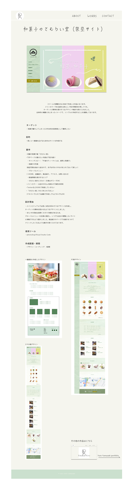

ポートフォリオ自体も１つの作品として見ていただけるように１から作成しました。
自身の柔らかい雰囲気を伝えるためにクリーム色を主体にし、
手書きフォントを用いて親しみやすさを感じていただけるようにデザインしました。
全体的に分かりやすくシンプルな構成を意識しております。
-
ターゲット
・Web制作会社 採用担当者様
-
目的
・転職活動に向けて自分自身についてやスキルなどをお伝えするため。
-
設計理由
・topページのメインビジュアルではあえてイラストを採用し, 視線がいくように誘導。そこで全体の雰囲気と概要を知って頂いた後、Aboutページで自身の経歴や強みをアピールできるように記載。
worsページでこれまでに作成した制作物を見て頂き、現在のスキルレベルをお伝えできるように作成しております。 -
使用ツール
・photoshop/Visual Studio Code
-
制作範囲・期間
・デザイン・コーディング ３週間
- 